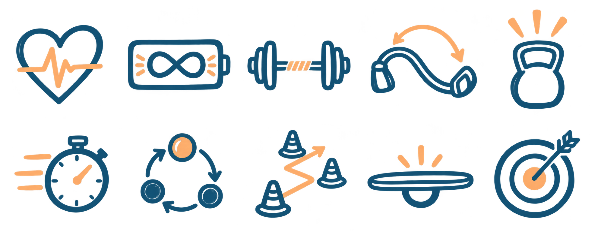

Ten ways to build fitness.
Hand-drawn marker motifs inspired by the gym mural, in slate blue and peach. Each drawing represents one of the ten physical skills on the supplied list.


1. CardioHeart + heartbeat 2. StaminaBattery + infinity 3. StrengthLoaded barbell 4. FlexibilityBending resistance band 5. PowerKettlebell + burst 6. SpeedStopwatch + motion lines 7. CoordinationThree balls + linked arrows 8. AgilityCones + zigzag route 9. BalanceCentered wobble board 10. AccuracyArrow + target
The blue-background option helps check contrast. Use these blue motifs on light backgrounds; the blue strokes blend into a blue surface.
Complete sprite sheet
Transparent PNG · 1983 × 793 pixels · five columns × two rows. The checkerboard below is a preview background.

Use one motif
Load the supplied CSS and choose a skill class, such as skill-motif skill-motif--strength. Set --motif-size to change its size. Keep the skill name in nearby HTML and mark the motif aria-hidden="true" when decorative.